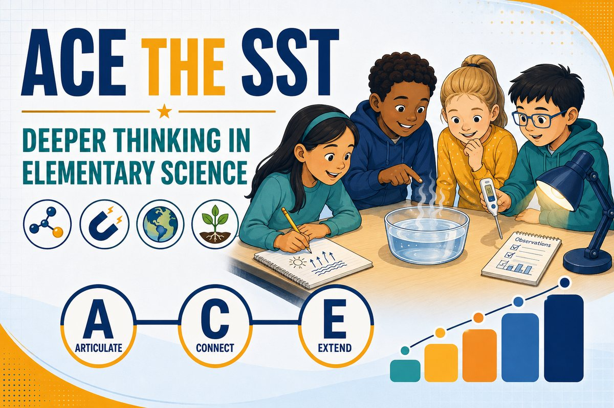
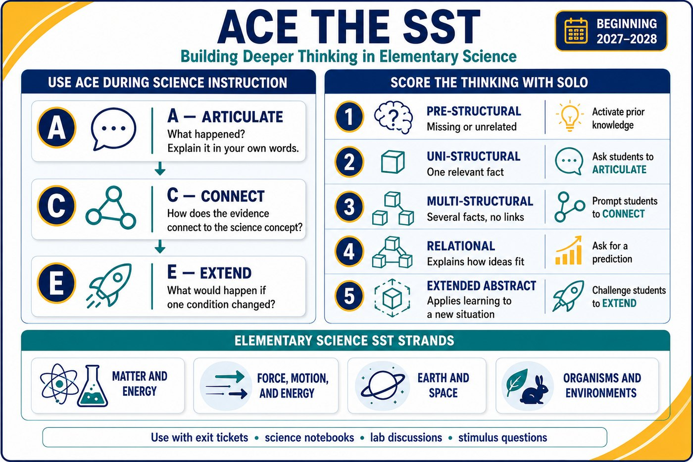

Science situation
How confident are you right now?
Quick formative checks that help students articulate science ideas, connect evidence and concepts, and extend their thinking — while making SOLO progress visible. Pick a grade and strand, run an entry ticket before the lesson and an exit ticket after, then teach from the level students actually show you.

A fifth-grade student can identify evaporation in a diagram. Then the question changes one condition and asks what happens next — and the memorized definition is not enough. Beginning in 2027–2028, the Student Success Tool replaces STAAR with beginning-, middle-, and end-of-year assessments, and TEA’s draft elementary science blueprints organize questions around four strands with multiple choice, multiselect, multipart, and inline choice formats.
What happened? Explain it in your own words.
How does the evidence connect to the science concept?
What would happen if one condition changed?
ACE takes less than a minute to explain, but it quickly reveals whether students understand the science or simply recognize familiar vocabulary. Score what you hear with SOLO, then pick the next move.
| Score | Evidence of learning | Next move |
|---|---|---|
| 1 · Pre-structural | Response is missing or unrelated | Activate prior knowledge |
| 2 · Uni-structural | Identifies one relevant fact | Ask the student to Articulate |
| 3 · Multi-structural | Lists several facts without linking them | Prompt the student to Connect |
| 4 · Relational | Explains how evidence and ideas fit together | Ask for a prediction |
| 5 · Extended abstract | Applies the concept to a new situation | Challenge the student to Extend |
Consider an Earth and Space question about how sunlight heats land and water. A student at level two might identify the Sun as the energy source. At level three, the student lists sunlight, land, water, and temperature. A level-four response explains why land and water warm at different rates. At level five, the student predicts how that difference could affect local weather.

Want the longer version? About ACE the SST works through why a memorized definition stops working, what the SST changes for elementary science, what each ACE move sounds like in a lesson, a worked example across all five SOLO levels, and where the tickets fit in a week.
SST preparation should not become a fresh stack of test-prep packets. Use ACE exit tickets, science notebooks, lab discussions, and short stimulus questions throughout the year. TEA’s SST resources describe the assessment design in full.